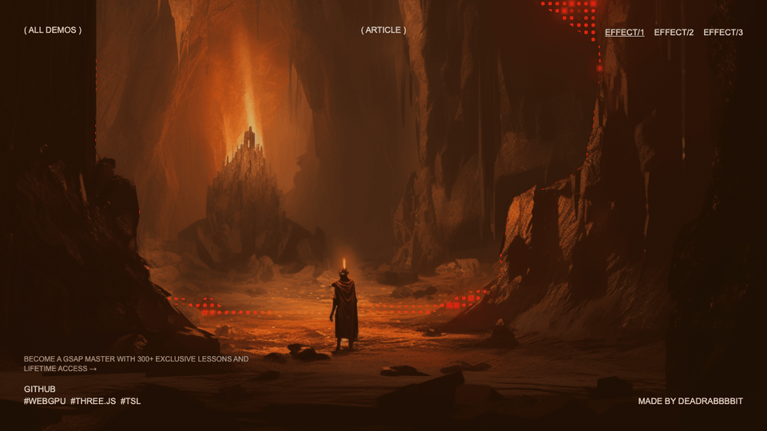
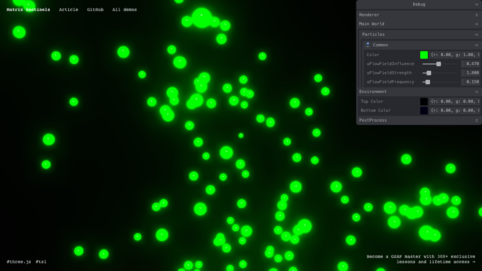
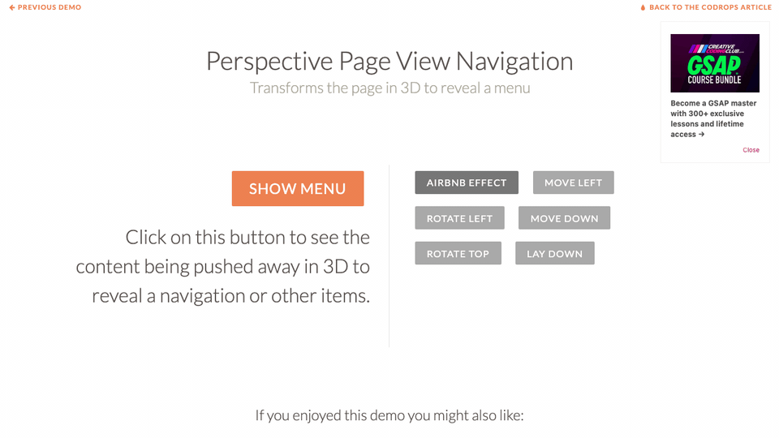
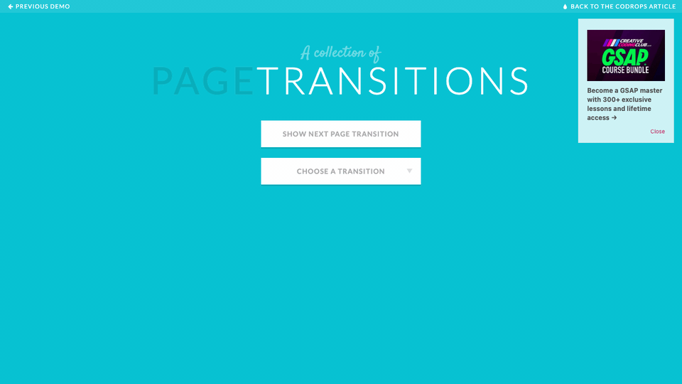
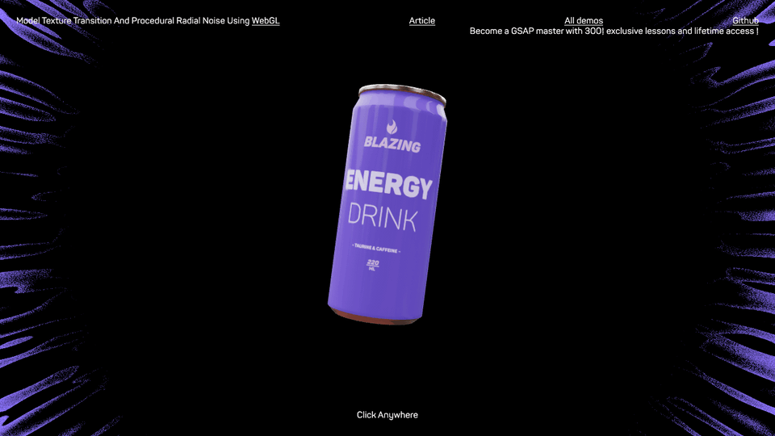

Focus: Tron / Iron Man HUD feel, startup line movement, scan energy, and 3D transition language from
your current planning notes.
Scanning effect with depth map
Live demo:
https://tympanus.net/Development/ScanEffect/effect1/

Good fit for your scan/HUD direction: moving scan bars and depth-based reveal can map to line-based startup
animations and 2D-to-3D projection moments.
GIF: plans/assets/tympanus-scan-effect-capture.gif
Regenerate: pnpm run capture-site-gif --url "https://tympanus.net/Development/ScanEffect/effect1/" --out "plans/assets/tympanus-scan-effect-capture.gif" --seconds 4 --settle-ms 1500 --wait-until domcontentloaded
Matrix Sentinels
Live demo:
https://tympanus.net/Tutorials/MatrixSentinels/

Strong match for matrix/boids and music-beat node ideas: flowing particles and trail energy can become
beat-driven node links or transition layers.
GIF: plans/assets/tympanus-matrix-sentinels-capture.gif
Regenerate: pnpm run capture-site-gif --url "https://tympanus.net/Tutorials/MatrixSentinels/" --out "plans/assets/tympanus-matrix-sentinels-capture.gif" --seconds 4 --settle-ms 1500 --wait-until domcontentloaded
Perspective Page View Navigation
Live demo:
https://tympanus.net/Development/PerspectivePageViewNavigation/

Useful for Spider-Verse-like perspective swings and GTA-style state shifts without overcomplicating scene logic.
GIF: plans/assets/tympanus-perspective-nav-capture.gif
Regenerate: pnpm run capture-site-gif --url "https://tympanus.net/Development/PerspectivePageViewNavigation/" --out "plans/assets/tympanus-perspective-nav-capture.gif" --seconds 4 --settle-ms 1500 --wait-until domcontentloaded
A Collection of Page Transitions
Live demo:
https://tympanus.net/Development/PageTransitions/

Practical transition library for choosing your motion language early (fold, cube, room, slide) before custom
polish.
GIF: plans/assets/tympanus-page-transitions-capture.gif
Regenerate: pnpm run capture-site-gif --url "https://tympanus.net/Development/PageTransitions/" --out "plans/assets/tympanus-page-transitions-capture.gif" --seconds 4 --settle-ms 1500 --wait-until domcontentloaded
Texture Transition (WebGL)
Live demo:
https://tympanus.net/Development/TextureTransition/

Gives a cleaner route to procedural radial-noise pulses that can be tied to music beats and startup reveal timing.
GIF: plans/assets/tympanus-texture-transition-capture.gif
Regenerate: pnpm run capture-site-gif --url "https://tympanus.net/Development/TextureTransition/" --out "plans/assets/tympanus-texture-transition-capture.gif" --seconds 4 --settle-ms 1500 --wait-until domcontentloaded